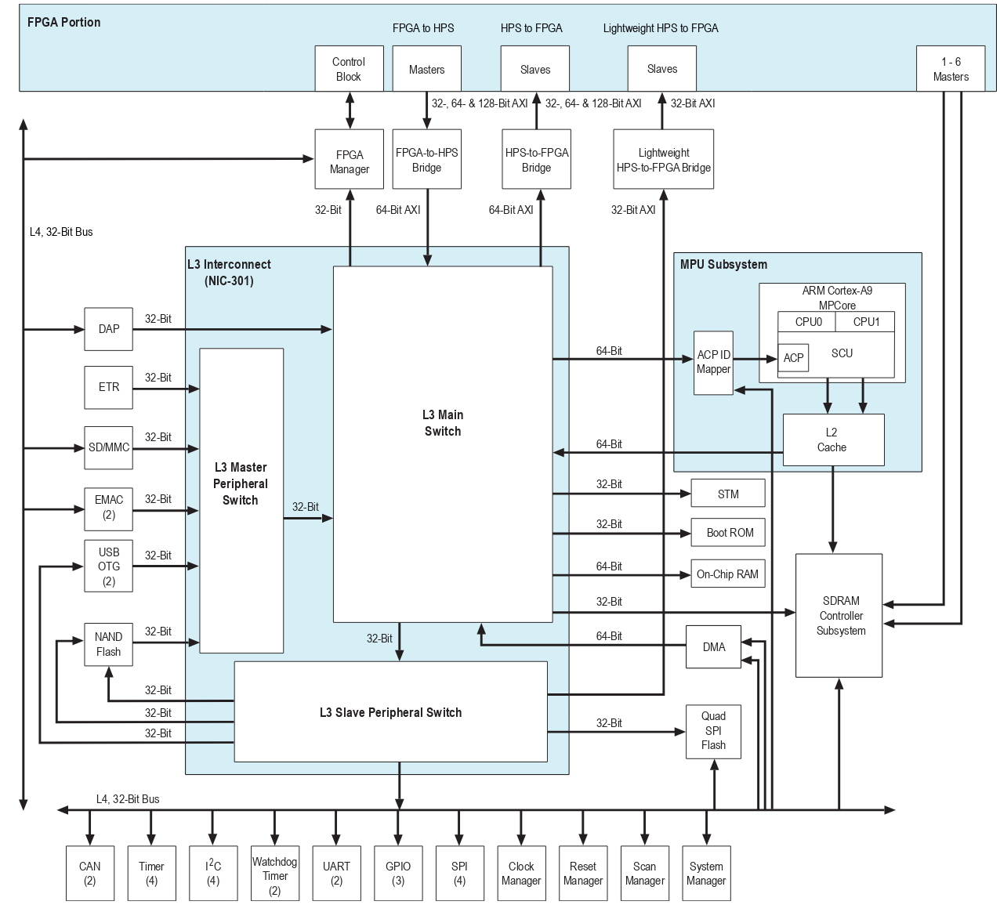

Visão geral¶
A FPGA contida no kit DE10-Standard é um chip SoC que em um único dispositivo que possui duas partes: o fabric da FPGA e um Hardware Process System (HPS). HPS é o termo utilizado pela Intel-Altera para definir a parte da FPGA que é fixa e relativa ao processador ARM A9 (pode ser outro ARM, depende da família da FPGA).

O HPS possui uma unidade de processamento com um ou dois Cores (depende do chip, no nosso caso é dual core) e alguns periféricos conectados em seu barramento (DMA, UART, USB, EMACS, ...). Além dos periféricos já contidos no HPS é possível conectarmos novos periféricos sintetizados na FPGA via a interface HPS FPGA Interfaces.
- Ler Introdução: 1 Introduction to Cyclone V Hard Processor System (HPS)
Família de FPGAs¶
A Altera possui quatro família de FPGAs-SoC:
- Stratix 10 SoC: High end, 14nm com ARM-Cortex-A53 de 64bits quad-core
- Arria 10 SoC: 20nm, Cortex A9 duas core com grande capacidade na FPGA
- Temos um kit no lab
- Arria V SoC: 28nm, Cortex A9 com foco em telecomunicações
- Cyclone V SoC: Família low end com valor mais baixo e mais low power.
Cortex A9¶
O Cortex A9 existente no HPS da Cyclone V possui as características a seguir (extraído do datasheet):
- ARM Cortex-A9 MPCore
- One or two ARM Cortex-A9 processors in a cluster
- NEON SIMD coprocessor and VFPv3 per processor
- Snoop Control Unit (SCU) to ensure coherency within the cluster
- Accelerator coherency port (ACP) that accepts coherency memory access requests
- Interrupt controller
- One general-purpose timer and one watchdog timer per processor •
- Debug and trace features
- 32 KB instruction and 32 KB data level 1 (L1) caches per processor
- Memory management unit (MMU) per processor
- ARM L2-310 level 2 (L2) cache
- Shared 512 KB L2 cache
A seguir um diagrama detalhado do HPS:

Conexão entre HPS e FPGA¶
Note que existe no diagrama anterior algumas interfaces definidas no "FPGA Portion", essas interfaces permitem a ponte entre o Fabric da FPGA e o ARM hard core do chip. As interfaces são, resumidamente:
- FPGA to HPS: Barramento na qual um Master na FPGA (Platform Designer) acessa o ARM
- HPS to FPGA: Barramento pelo qual o ARM acessa um periférico (slave) na FPGA
- Lightweight HPS to FPGA: Barramento de menor banda que conecta o ARM em um periférico na FPGA (slave)
- 1-6 Masters SDRAM Controller: Permite a FPGA ler e escrever da memória SDRAM externa ao chip
AXI¶
Os barramentos são todos do tipo AXI, um padrão definido pela própria ARM e usada em seus microcontroladores.
AXI - AVALON
Via Platform Designer podemos conectarmos periféricos com o barramento Avalon (mm) no barramento AXI do ARM, isso é possível por uma "mágica" que a PD faz convertendo um barramento no outro de forma transparente ao usuário.
SDRAM¶
A SDRAM deve ser usada com muita cautela pois ela será compartilhada com o Linux que estará em execução no ARM, caso um periférico da FPGA acesse "aleatoriamente" a memória SDRAM ele pode sobrescrever dados importantes do kernel e crashar todo o sistema. Essa alocação deve ser realizada no boot do Linux onde iremos dizer qual região de memória o kernel pode utilizar.
Note
Essa memória que é acessível tanto pelo Linux quanto pela FPGA é uma boa maneira de compartilhamento de dados a serem processados.
Aplicações¶
Com isso agora é possível unir o melhor dos dois mundos: flexibilidade e paralelismo da FPGA com o melhor dos processadores embarcados ARM. Nos nossos projetos, o NIOS será substituído pelo ARM, possibilitando maior poder de processamento e também suportando a execução de sistemas mais complexos, tal como o Linux.
Pense na aplicação de uma imagem que será processada pela FPGA a fim de aumentar o throughtput do sistema. Essa imagem será lida por exemplo por uma câmera USB conectada no HPS, como geralmente o HPS executa um Linux, temos facilidade de acesso ao driver dessa câmera USB.
A imagem será então lida via o driver e então alocada na memória SDRAM, o endereço da memória assim como as propriedades do processamento serão transferidas para um periférico customizado no Fabric da FPGA via a interface LT-AXI. O periférico que está em modo wait, após ser configurado, começa a ler a imagem na memória SDRAM, processar e salvar o resultado na própria memória. Ao final da conversão uma interrupção é gerada e o Linux irá tratar o dado.
Enquanto o periférico processa o dado, a aplicação pode de forma concorrente, ler uma nova imagem e já alocar em um novo endereço de memória, pois o processamento e a aquisição agora funcionam de forma simultânea.
Próximos passos¶
Vamos agora subir executar um Linux no ARM, iremos nesse momento trabalhar com uma imagem já pronto. Siga para o tutorial
ter que configurar nossa infra para podermos gerar códigos para o ARM, siga o para: Tutorial HPS BuildSystem.